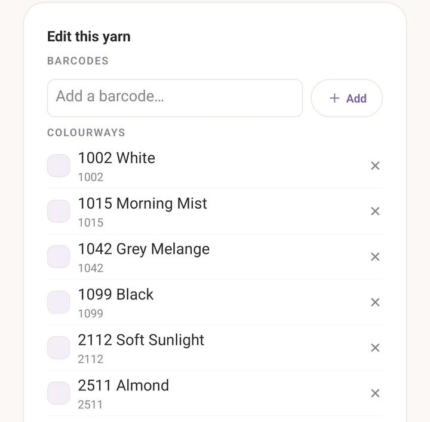

Barcodes and the yarn library
Scanning a ball band should not be a one-off prefill. It should teach the app what that yarn is, so the next scan, by you or by a friend you share with, has the answer ready.
That is what the yarn library is for.
On this page 11
The basic flow
You are at the yarn shop. You buy two skeins of a yarn you have never logged. At home:
- Tap Stash, then Add.
- In the Add yarn form, tap the barcode button next to Pick from library.
- Hold the ball band inside the frame on Scan a skein.
- Purl recognises the yarn and fills the form in: brand, name, weight, fibre, gauge, suggested needle. You add the skein count.
- Tap Add to stash.
That recognition comes either from the bundled catalogue or from a yarn your library already knows.
If the code is new, the form opens with the barcode attached and nothing else filled in. You type brand, name, weight and the rest, and save. That save quietly teaches the library: the next scan of that code is recognised.
A barcode belongs to a colour
A yarn barcode is a shop-floor code for one shade, not for a whole yarn line. The till and the picking list work that way, and so does Purl.
So a scanned code attaches to a colourway of a yarn where it can, and to the yarn itself otherwise. Two consequences you will notice:
- Scan a code Purl has seen on a colour, and the colour comes back with it, swatch and all, not just the brand and name.
- Scan a colour you already own and the question is the useful one: Add a skein to the row you have, or New dye lot for this ball band.
Correcting a colour in the form corrects what the code means. The code moves to the colour you saved it under.
The Yarn library screen
Open More, then Barcode scanner under Tools. The screen is called Yarn library.
The camera sits at the top, live and ready. Under it are your saved yarns, and a search field.
Scan from the top of the screen, browse what you have saved underneath.
What a scan gives you here:
- A code you already have: an Already in your library card, with Edit and Remove.
- A new code: a Save as a new yarn card, with the fields to fill in and Save yarn at the bottom.
Tap Scan another in the strip at the top to go back to the camera.
Inside a yarn
Tap any row in Saved yarns to open it. On a device that has never scanned, that list is empty: search the catalogue instead and tap a result, which opens the same screen.
- Barcodes: a chip for each code. Add one by typing it into Add a barcode…, remove one with its cross. Several codes per yarn is the whole point: manufacturers cycle codes between packaging runs, so an old skein and a fresh one often carry different ones.
- Colourways: the colours Purl knows this yarn comes in, each with its colour code. A colour you have scanned or saved yourself also shows its shade and the barcodes pointing at it; one that came from the catalogue shows the code alone, with an empty swatch, until a scan fills it in. Tap the cross to forget one it got wrong.
- Brand, Name, Fibre, Weight, Gauge, Suggested needle, Metres per skein, Grams per skein.

The bundled catalogue
Purl ships with a curated catalogue of Nordic producers and their yarn lines: Sandnes Garn, DROPS, Rauma Garn, Dale Garn, Hillesvåg (Hifa), Du Store Alpakka, Camilla Pihl Garn, Viking Garn, Järbo, Svarta Fåret, Filcolana, Knitting for Olive, CaMaRose, Hjertegarn, Isager, Ístex and Novita. Brand, yarn names, weight, fibre and meterage for all of them, and named colour ranges for many.
Catalogue yarns carry a Catalogue badge, and they stay out of the list until you search, so your own saved yarns are not buried under two hundred others. A line at the bottom tells you how many are waiting: Plus N yarns from the built-in catalogue: search to attach a barcode or edit one.
Editing a catalogue yarn makes it yours. Your version shadows the built-in one from then on, and app updates can ship new catalogue entries without overwriting what you changed.
You can switch the catalogue off entirely: More, the gear in the header, then Built-in yarn catalogue under Defaults.
Duplicates
If you end up with two entries for the same yarn, usually a blank weight one time and a filled one the next, a card appears at the top: N possible duplicates, same brand & yarn. Tap Merge and they fold into one. Barcodes are combined, blank fields are filled from the others, and the most complete entry is kept.
Two records of one yarn, folded back into one.
Attaching a code to a yarn you already have
If you scan an unknown code but you can see the product in your library, or in the catalogue, tap Or attach this barcode to an existing yarn… on the Save as a new yarn card. A searchable picker opens, Pick the yarn this barcode is for. Tap the right one and the code attaches there, instead of starting a second record for the same yarn.
Sharing your library
The share icon in the Yarn library header writes a .purlt file with your
whole library and opens the system share sheet. Email it, put it in Drive,
send it however you like.
Your friend taps the import icon on their own Yarn library and picks the
file, or simply opens the .purlt from their file manager, and Purl merges:
- Yarns that match on brand, name and weight get their barcodes combined, and their known colours folded in. Where you both know a colour by the same name, your own shade is kept and their barcodes are still added.
- Anything new lands as a fresh entry.
No yarn, projects or photos cross over. Only the library.
The flywheel
Over time:
- You scan yarn, and your library fills out.
- You share a
.purltwith a friend, or it rides along in your regular.purlbackups. - Those yarns get folded into the bundled catalogue in a later Purl release.
- The next person installing Purl gets them on day one.
The whole catalogue is built this way, and the folding-in step is manual by design.
A note on the scanner
The barcode scanner is still experimental, and Purl says so the first time you open it. It reads EAN, UPC, Code 128, Code 39 and QR codes. Ball-band barcodes are small and often on shiny paper, so give it light and hold the band flat.
See also
- Yarn stash: the scanning flow from the stash side, and the colours Purl remembers.
- Tutorial: your yarn, in and out: one scan, start to finish.
- Backups:
.purltis one of three share formats, alongside.purlfor a whole backup and.purlpfor a single pattern.